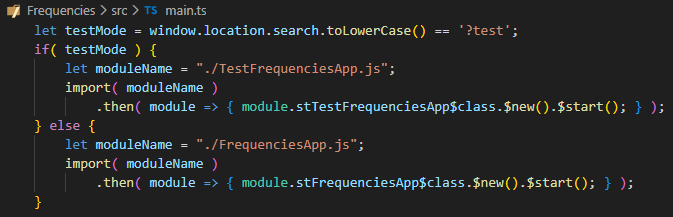

There is one last thing to do before the app can be started.
Starting from JS, the system needs to know with ST startup class and method to call.
That code is in the file
./src/main.ts .
Replace its contents with the following JS code:
let testMode = window.location.search.toLowerCase() == '?test';
if( testMode ) {
let moduleName = "./TestFrequenciesApp.js";
import( moduleName )
.then( module => { module.stTestFrequenciesApp$class.$new().$start(); } );
} else {
let moduleName = "./FrequenciesApp.js";
import( moduleName )
.then( module => { module.stFrequenciesApp$class.$new().$start(); } );
}
On screen it looks like this:

Note that first a check is done if the app was started in test mode.
We don't have that yet, so let's focus on the
else part.
First a variable is set to the compiled ST module name to import.
Then the module is imported async using the
import() function.
Lastly a new instance is created of the app class with
$new() ,
and then the
start$() method is called on that instance.
So its just the JS equivalent of the ST expression:
FreqenciesApp new start .
Notes (advanced):
- The import is done with a separate variable and aynchronously
to prevent VSCode complaining about initially missing ST modules, classes or methods.
(This happens when sync ESM6 'import' is used.)
- The ST class and method names are bit 'mangled' with dollar signs and an
st prefix.
This is necessary to prevent name clashes in generated code.
Don't worry, you won't see this in regular ST development.
Now we can finally start the app! ...